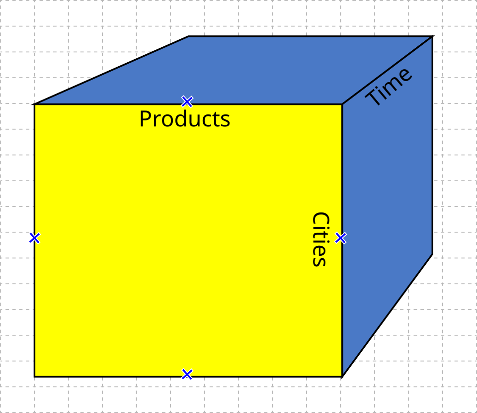
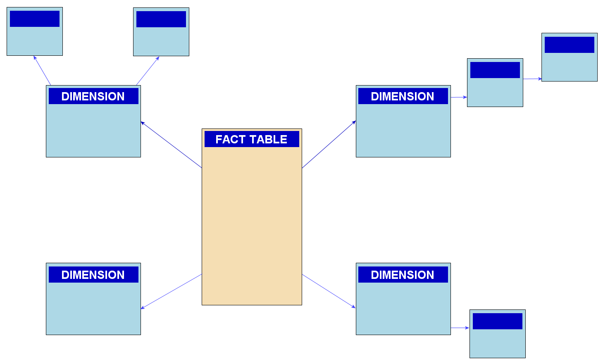

Business Intelligence
- New to business or databases? Start with Unit 0. In about 20 minutes it covers how a business is organised, data vs information, what a database table is, the difference between recording data and analysing it, and what "business intelligence" means, using everyday examples.
- Then work through the units in order. Each topic opens with a boxed definition. Learn that wording, because examiners look for it, and end each topic with its evaluator's checklist.
- Finish each unit with its flashcard deck.
What the 2023 paper shows. The BI mid-sem (TIT-721, Oct 2023) had 5 × (a/b) questions of 10 marks. Q1–Q3(a) were Unit 1 (CO1): IT applications in a university, the Malcolm Baldrige framework (asked twice, as 1(b) and 2(b)), business process management, and the connected world. Q3(b)–Q5(a) were Unit 2 (CO2): unstructured-data growth, why web pages are unstructured, XML to structured, and backup and recovery. Q5(b) was Unit 3 (CO3): OLTP vs ERP and OLTP queries. The questions are applied ("your university", "what according to you"), so answers must give examples as well as definitions. Your syllabus now covers three units, so expect more OLAP questions this year. The professor also taught data warehousing and integration (slides and Assignments 3–4), which is covered here as § 3.6–3.8.
Business and Data from Zero
How a business works, what data is, and why businesses keep two very different kinds of database, explained with a tea shop.
Not a syllabus unit by itself, but every idea here (departments, business process, data vs information, table, row, column, transaction, report, structured and unstructured data) appears in Units 1–3 and in exam answers. Read it once slowly. It takes about 20 minutes.
Step 0.1How a business is organised: from tea stall to company
Imagine Ravi's tea stall. On day one, Ravi does everything himself: buys milk, makes tea, takes money, counts the cash. Ten years later "Ravi's Chai" has 50 shops, and the jobs have split into departments:
| Function (department) | What it does at Ravi's Chai |
|---|---|
| Purchasing / supply chain | Buys milk, tea leaves and cups from suppliers |
| Operations / production | Makes the tea in every shop |
| Sales & marketing | Sells tea, runs offers, handles customers |
| Finance & accounts | Tracks money in and out, pays bills, files taxes |
| Human resources (HR) | Hires, trains and pays staff |
A business process is a sequence of steps that crosses these departments to get something done.
- Enterprise
- A business organisation, usually a large one
- Function
- One kind of job done in the business (sales, finance, HR…)
- Business process
- A chain of steps, often across departments, that produces a result for a customer
Step 0.2Data, information, knowledge
Information: "Shop 12 sells 40% of its tea between 7 and 9 am."
Knowledge / decision: "Put two staff on the morning shift at Shop 12 and one in the afternoon."
- Data
- Raw, unorganised facts and figures
- Information
- Data processed and organised so it is meaningful
- Knowledge
- Understanding gained from information, used to make decisions
Step 0.3What a database is: tables, rows and columns
| sale_id | shop | time | item | price (₹) |
|---|---|---|---|---|
| 90231 | 12 | 07:05 | Masala chai | 20 |
| 90232 | 12 | 07:06 | Samosa | 15 |
| 90233 | 4 | 07:06 | Masala chai | 20 |
- The schema is the fixed design of the table: these five columns, in this order, with these types (number, time, text).
- The primary key (sale_id) is a column whose value is different for every row, so each row can be found exactly.
- A question in SQL looks like:
SELECT SUM(price) FROM sales WHERE shop = 12;meaning "total sales at shop 12".
- Database / DBMS
- An organised store of data / the software that manages it (e.g. MySQL, Oracle)
- Table, row, column
- A grid of data; one record; one attribute of every record
- Schema
- The fixed design of the tables: which columns and what types
- Primary key
- A column that uniquely identifies each row
- SQL
- Structured Query Language, used to ask a database questions
Step 0.4Two jobs for data: running the business vs understanding it
| Running the business (OLTP) | Understanding the business (OLAP) | |
|---|---|---|
| At Ravi's Chai | The billing machine at the counter | The owner's monthly report and dashboard |
| Typical question | "Record this ₹20 sale." "Is Shop 12 out of milk?" | "Which shops grew fastest in the last 3 years, by month and by product?" |
| Work | Thousands of tiny inserts and updates per minute | A few huge read-only queries over millions of rows |
| Data | Current, detailed | Historical, summarised |
| Users | Cashiers, clerks | Managers, analysts |
Why not use one system? Because the owner's giant 3-year report would slow down every cashier's billing. So data is copied regularly from the OLTP systems into a separate data warehouse, where it is cleaned and arranged for analysis. That copying is called ETL (Extract, Transform, Load).
- Transaction
- One small unit of business work recorded in the database (a sale, a payment)
- OLTP
- On-Line Transaction Processing: systems that record day-to-day transactions
- OLAP
- On-Line Analytical Processing: systems for analysing large amounts of historical data
- Data warehouse
- A separate store of cleaned, historical data from across the business, built for analysis
- ETL
- Extract, Transform, Load: copying data from source systems into the warehouse
- Dimension / measure
- A way to slice data (shop, product, time) / the number being analysed (sales)
Step 0.5Structured, semi-structured and unstructured data
| Type | Everyday example at Ravi's Chai | Easy to search? |
|---|---|---|
| Structured | The sales table above | Yes: fixed columns, SQL works |
| Semi-structured | An online order sent as XML or JSON: <order><item>chai</item><qty>2</qty></order> | Partly: labels (tags) say what each value is, but orders can have different fields |
| Unstructured | Customer reviews, WhatsApp complaints, CCTV video, photos of receipts | No: needs text mining, image analysis and so on |
- Structured data
- Data in a fixed format of rows and columns
- Semi-structured data
- Data with tags or labels but no rigid schema (XML, JSON, email headers)
- Unstructured data
- Data with no predefined format (text, images, audio, video)
- XML
- eXtensible Markup Language: text with <tags> that label each piece of data
Step 0.6So what is "Business Intelligence"?
- Collect: transactions from OLTP systems (billing, ERP, CRM), plus outside data.
- Integrate and store: ETL into a data warehouse or data marts.
- Analyse: OLAP cubes, reports, dashboards, data mining.
- Decide and act: managers use the insights, then measure the results, which feeds back into step 1.
How to use this in the exam: BI questions are often applied ("in your university…", "what according to you…"). Give the definition, then an example from a place you know (your college, a shop, a bank), exactly as the tea shop was used here.
Flashcards · Unit Zero
If you can answer these in your own words, you're ready for Unit 1.
A Business View of Information Technology
How an enterprise is organised, what the Baldrige framework measures, and why businesses use enterprise and bespoke IT applications.
Syllabus: business enterprise organisation, functions and core business processes · Baldrige Business Excellence Framework (leadership, strategic planning, customer focus, measurement/analysis/knowledge management, workforce focus, process management) · key purpose of using IT in business · enterprise applications (ERP/CRM etc.) and bespoke IT applications
§ 1.1Business Enterprise Organisation, Functions & Core Business Processes
Think of a company as an orchestra. Each section (sales, finance, HR) is a function, and the piece they play together, such as taking an order and delivering it, is a business process. IT is the sheet music and the conductor's baton: it coordinates everyone.
| Core (value-creating) functions | Support functions |
|---|---|
| Sales & Marketing: find and win customers Product / Service Delivery (operations, manufacturing, supply chain) Research & Development: create new offerings Quality: make sure output meets standards Customer Service / Support | Finance & Accounts Human Resources Information Technology Legal & Compliance Facilities / Administration, Procurement |
A typical organisation structure is hierarchical: a CEO with functional heads (CFO, CMO, CTO/CIO, CHRO, COO), then managers, then operational staff. Information needs differ by level: strategic (top management: trends, KPIs, what-if), tactical (middle management: summaries, exceptions) and operational (staff: detailed, real-time transactions). This distinction later motivates OLTP (operational) vs OLAP and BI (strategic and tactical).
| Process | Steps | Functions involved |
|---|---|---|
| Order-to-Cash | Enquiry → quotation → sales order → fulfilment/shipping → invoice → payment collection | Sales, Operations, Finance |
| Procure-to-Pay | Requisition → PO → goods receipt → vendor invoice → payment | Procurement, Stores, Finance |
| Hire-to-Retire | Recruit → onboard → payroll → appraisal → training → exit | HR, Finance, IT |
| Idea-to-Product / Concept-to-Market | Ideation → design → prototype → test → launch | R&D, Marketing, Operations |
| Record-to-Report | Transactions → ledger → close → financial statements | Finance |
A university is also an enterprise. Its "customers" are students, recruiters and funding bodies; its core process is admission-to-alumni. The automated IT applications that help its day-to-day functioning:
| Application | What it automates | Benefit |
|---|---|---|
| Admission / enrolment portal | Online applications, fee payment, document verification, merit lists | No queues; faster, transparent selection |
| ERP / Student Information System (SIS) | Student records, course registration, attendance, timetables, results | A single source of truth for student data |
| Learning Management System (Moodle, Google Classroom) | Course material, assignments, quizzes, grading | Anytime learning; plagiarism checks (Turnitin) |
| Examination management | Question banks, hall tickets, seating, result processing, mark sheets | Accuracy and speed; secure grading |
| Fee and finance system | Fee collection (UPI/online), scholarships, payroll, budgeting | Reconciliation, audit trail |
| Library management (KOHA, SOUL) | Cataloguing, issue/return with barcode/RFID, OPAC search, e-journals | Self-service, inventory control |
| HRMS | Faculty recruitment, leave, appraisal, payroll | Transparent HR processes |
| Hostel and transport | Room allocation, mess billing, bus-route tracking | Logistics efficiency |
| Placement portal / CRM | Recruiter relations, drive scheduling, student eligibility | Better placement outcomes |
| Biometric / RFID attendance, CCTV, campus Wi-Fi | Attendance capture, security | Real-time monitoring |
| BI dashboards (NAAC/NIRF reporting) | Pass %, placement %, research output, feedback analytics | Data-driven decisions and accreditation |
Functional organisation builds expertise but creates silos: each department's separate system holds its own version of data (for example, the student's address in the admissions system differs from the hostel system). Cross-functional processes then break at the hand-offs. This is exactly the problem that integrated enterprise applications (ERP) and later data warehouses and BI were created to solve.
- Definition of enterprise, functions (core vs support), and business process (cross-functional).
- Named processes: order-to-cash, procure-to-pay, hire-to-retire.
- For "your university": at least 8 applications in a table, with the benefit of each.
- The silo problem as the link to ERP and BI.
§ 1.2The Malcolm Baldrige Performance Excellence Framework
It is a health check-up for an organisation. It does not tell you what to do; it asks structured questions about how you lead, plan, serve customers, measure, manage people and run processes, and what results you achieve.
- Leadership: how senior leaders set vision, values and direction, communicate and create a sustainable organisation; plus governance and societal responsibilities (ethics, legal compliance, community support).
- Strategic Planning (Strategy): how the organisation develops strategic objectives and action plans, deploys them, changes them if circumstances demand, and measures progress.
- Customer Focus: how it listens to the voice of the customer, determines requirements and satisfaction, builds relationships, and uses customer information to improve.
- Measurement, Analysis & Knowledge Management: how it selects, gathers, analyses, manages and improves data, information and knowledge assets; how it reviews performance and uses the results. This is the category that BI serves directly.
- Workforce Focus: how it assesses capability and capacity needs, and builds an engaged, high-performing environment (learning, development, well-being).
- Process Management (Operations): how it designs, manages and improves key work processes and work systems for efficiency, effectiveness and innovation, including supply chain and emergency readiness.
- Results: performance and trends in product/process outcomes, customer, workforce, leadership/governance, and financial/market results, compared with competitors and benchmarks.
Scoring: 1,000 points in total. Process categories (1–6) are assessed on ADLI (Approach, Deployment, Learning, Integration); Results (7) on LeTCI (Levels, Trends, Comparisons, Integration). Results carries the largest single weight (450 points).
Core values and concepts (examples): systems perspective, visionary leadership, customer-focused excellence, valuing people, organisational learning and agility, focus on success, managing for innovation, management by fact, societal contributions, ethics and transparency, delivering value and results.
| Category | University example |
|---|---|
| Leadership | Vice-Chancellor's vision (e.g. NAAC A++), code of ethics, social outreach |
| Strategic Planning | 5-year institutional development plan; NIRF ranking targets |
| Customer Focus | Student feedback surveys, recruiter satisfaction, grievance cell |
| Measurement & KM | ERP data, BI dashboards (pass %, attendance, placement), research repository |
| Workforce Focus | Faculty development programmes, appraisal, workload balance |
| Process Management | Admission, examination and placement processes documented and improved |
| Results | Placement %, research citations, accreditation grade, finances |
Strengths: holistic and systems-based; links leadership to results; adaptable to any sector; management by fact encourages data-driven decisions. Criticisms: documentation-heavy and resource-intensive; award-seeking can become box-ticking; some award winners later declined financially, which shows that the criteria are necessary but not sufficient. Comparable frameworks: the EFQM Excellence Model (Europe) and India's Rajiv Gandhi National Quality Award (Bureau of Indian Standards). In India, Tata Group's TBEM (Tata Business Excellence Model) is adapted directly from Baldrige.
- Origin: 1987 Act, NIST, named after Malcolm Baldrige; award plus self-assessment.
- All seven categories in order, each with a one-line explanation and example; the diagram showing the triads and foundation.
- Scoring (1,000 points; ADLI/LeTCI) and core values, especially management by fact.
- Link to BI: category 4 is where BI lives. Mention TBEM for the Indian case.
§ 1.3Business Process Management (PYQ 2023 Q2a)
- Design (and discovery): identify existing processes ("as-is") and design the desired ones ("to-be"), including goals, owners, inputs and outputs, and SLAs.
- Model: represent the process formally, usually in BPMN (Business Process Model and Notation: events, activities, gateways, swim-lanes), and simulate "what-if" scenarios (cost, cycle time).
- Execute (implement and automate): deploy the process in a BPM suite or workflow engine and integrate it with ERP/CRM; automate rule-based steps (including RPA bots); train people.
- Monitor: track KPIs in real time (cycle time, throughput, error rate, cost per transaction) using dashboards and process mining. This is where BI plugs in.
- Optimise: use the monitoring data to remove bottlenecks and waste, then redesign, which starts the cycle again.
Supporting activities: process governance (process owners, standards), documentation, change management, and compliance.
An Indian bank redesigns its loan-approval process. It maps the "as-is" flow (7 days, 5 hand-offs), models it in BPMN, automates KYC checks with Aadhaar e-KYC and credit bureau APIs (execute), monitors turnaround time on a dashboard, and optimises by adding auto-approval for low-risk applicants. The result: approval in minutes for most applicants, which is the model behind "instant loan" fintech apps.
BPM works when processes are stable and repeatable. It struggles with knowledge work that cannot be standardised. Automating a bad process just makes a bad process faster, so redesign must come before automation. Good BPM needs data: without monitoring (BI), "optimise" is guesswork.
- Definition; continuous vs BPR.
- Five lifecycle stages with a cycle diagram; BPMN named.
- Link monitoring to BI and KPIs; one worked example.
§ 1.4Key Purpose of Using IT in Business & the Connected World
- Automate operations: replace manual, repetitive work (billing, payroll) for speed, accuracy and lower cost.
- Integrate functions and processes: share one data source across departments (ERP), which removes silos.
- Support decision-making: reports, dashboards, analytics (BI), moving from gut feel to fact-based decisions.
- Improve customer experience: self-service portals, apps, CRM, personalisation.
- Enable collaboration and communication: email, intranets, video conferencing.
- Competitive advantage and innovation: new digital products and business models (e-commerce, platforms).
- Compliance, security and record-keeping: audit trails, statutory reporting (GST filing).
- Reach and scale: global, 24×7 operations.
The connected world and Internet-ready applications (PYQ 2023 Q3a)
The connected world is today's environment in which people, organisations, devices and applications are permanently linked through the Internet, mobile networks, cloud and IoT, so that transactions and information flow anytime, anywhere, on any device. Customers expect to order, pay, track and complain online, and partners expect systems to talk to each other through APIs. Business IT applications must therefore be Internet-ready, with these common advanced capabilities:
| Capability | Meaning | Example |
|---|---|---|
| Anytime, anywhere, multi-channel access | Browser, mobile app, kiosk, voice; responsive UI | IRCTC ticketing on web and app |
| Scalability | Handles sudden spikes of users (elastic cloud) | Flipkart Big Billion Days |
| High availability and reliability | 24×7, fault-tolerant, disaster recovery | UPI's uptime targets |
| Security | Authentication (OTP/2FA), encryption (HTTPS/TLS), authorisation, audit | Net banking |
| Performance | Low response time (caching, CDNs) | Page loads in < 2 s |
| Interoperability and integration | Open standards, APIs/web services (REST, XML/JSON) to connect partners | Payment-gateway and courier APIs |
| Personalisation | Content tailored to the user profile and history | Amazon recommendations |
| Localisation / multi-lingual | Language, currency, time-zone, regulations | Vernacular apps (ShareChat) |
| Collaboration and social features | Sharing, reviews, chat | Customer ratings |
| Manageability and analytics | Logging, monitoring, usage analytics feeding BI | Clickstream analysis |
During the COVID-19 lockdowns, retailers with Internet-ready systems (online catalogue, UPI, delivery tracking APIs) kept selling while others shut. Connectivity also widens the attack surface (ransomware, data leaks, now regulated by India's DPDP Act 2023) and creates a flood of semi-structured and unstructured data (clickstreams, reviews, logs), which leads directly into Unit 2.
- At least 6 purposes of IT in business.
- Define the connected world, then list 8–10 capabilities with examples.
- Link to data growth and security risks.
§ 1.5Enterprise Applications (ERP, CRM, SCM…) vs Bespoke IT Applications
| Application | Purpose | Vendors / examples |
|---|---|---|
| ERP (Enterprise Resource Planning) | Integrates finance, HR, procurement, inventory, manufacturing and sales on one database | SAP S/4HANA, Oracle, Microsoft Dynamics, Tally Prime (SMEs) |
| CRM (Customer Relationship Management) | Sales pipeline, marketing campaigns, service tickets: the 360° customer view | Salesforce, Zoho CRM, Freshworks |
| SCM (Supply Chain Management) | Planning, sourcing, logistics, warehouse, demand forecasting | SAP IBP, Oracle SCM, Blue Yonder |
| HRMS / HCM | Hire-to-retire processes | Workday, Darwinbox, SAP SuccessFactors |
| PLM, SRM, EAM, KMS | Product lifecycle, supplier relations, asset maintenance, knowledge | Siemens Teamcenter, etc. |
| Aspect | Enterprise (packaged) | Bespoke (custom) |
|---|---|---|
| Fit to requirements | Standard best practice; organisation adapts to software | Exact fit to unique processes |
| Time to deploy | Faster (configure) | Slower (build from scratch) |
| Cost | Licence/subscription + implementation; shared R&D | High development cost; the organisation owns the code |
| Upgrades and support | Vendor provides; regular updates | In-house responsibility |
| Competitive differentiation | Low (competitors use the same) | High (unique capability) |
| Risk | Vendor lock-in; heavy customisation breaks upgrades | Key-person dependency; quality varies |
| Examples | SAP at Tata Steel; Salesforce at banks | IRCTC booking engine; Zerodha Kite; a university's own exam system |
Most firms use a hybrid: ERP for commodity processes (accounting, payroll) and bespoke applications where they compete (Amazon's recommendation engine, Swiggy's delivery-routing system). ERP ensures one version of the truth for operations, but operational ERP databases are optimised for transactions (OLTP), not analysis, which is why BI and data warehouses are added on top (Unit 3).
ERP implementations are notoriously risky. The Hershey's 1999 SAP go-live disrupted Halloween shipments and cost about $100M in lost sales. Common reasons are poor change management and over-customisation. Bespoke software gives an exact fit but creates technical debt. Cloud SaaS (Zoho, Salesforce) has lowered entry cost for SMEs, which blurs the old trade-offs.
- Both definitions; ERP, CRM, SCM, HRMS with purposes and vendors.
- Comparison table (fit, time, cost, support, differentiation, risk).
- Hybrid strategy; link from ERP (OLTP) to BI.
Flashcards · Unit One
Tap a card to turn it over.
Types of Digital Data
Structured, semi-structured and unstructured data: what each is, where it comes from, and how to store, manage and extract information from it.
Syllabus: structured data (characteristics, sources, hassle-free retrieval) · unstructured data (sources, management, storage, storage challenges, extracting information, UIMA) · semi-structured data (sources, management, modelling with OEM, extracting information, XML as a solution)
§ 2.1The Three Types at a Glance
Digital data is classified by how much structure it has, meaning how far it conforms to a predefined data model. The Prasad & Acharya textbook (the prescribed book, and the source of the professor's slides) estimates that in a typical enterprise about 80% of data is unstructured, about 10% semi-structured and about 10% structured.
| Basis | Structured | Semi-structured | Unstructured |
|---|---|---|---|
| Structure | Conforms to a predefined data model (schema); rows and columns | No rigid schema but has tags/markers that describe and group data; self-describing | No data model; cannot be stored in rows and columns; unpredictable |
| Schema | Schema-on-write, fixed in advance | Schema is embedded in the data and can vary between records | None |
| Examples | Student marks table, bank transactions, inventory | XML, JSON, email (headers + body), HTML, CSV logs | Word/PDF documents, images, audio, video, chat, social posts |
| Storage | RDBMS (Oracle, MySQL, SQL Server), spreadsheets | XML/document databases (MongoDB), OEM graphs, files | File systems, BLOBs, content-addressable storage, data lakes, object stores (S3) |
| Retrieval | SQL; easy, fast, precise (indexes) | XPath/XQuery, JSON queries; moderate | Text search, tagging, text mining, AI; hard and imprecise |
| Scalability | Vertical, harder at huge scale | Good | Scales in storage, but analysis is hard |
| Setting | Structured | Semi-structured | Unstructured |
|---|---|---|---|
| University | Marks and attendance in a database | XML files; emails (headers are structured, the body is not) | PDF documents, student photographs, lecture videos, email bodies |
| Hospital | Patient ID, age, blood group, test results in a database | XML used to exchange records between systems (HL7/FHIR) | Doctors' reports and prescriptions as PDFs, X-ray and MRI images |
Why are marks, attendance, patient ID, age, blood group and test results structured? They are discrete, typed attributes (numbers, dates, fixed codes) with a fixed format for every record. They fit predefined columns with constraints (primary key, data type, range) and can be queried directly with SQL (e.g. SELECT AVG(marks) … GROUP BY course).
Why are emails, PDFs, photos, videos and scans hard to manage and search? They have no predefined attributes, so there are no fields to index or query. Their meaning is in free text or pixels and must be interpreted (NLP, OCR, image recognition). Files are large, formats are many, metadata is often missing, and naming conventions are inconsistent.
§ 2.2Structured Data
- Conforms to a data model: has a well-defined structure, and every record has the same attributes.
- Data is stored as rows and columns (tables), with defined data types (INT, VARCHAR, DATE) and lengths.
- Similar entities are grouped (the Student table, the Course table), and attributes in a group are the same.
- Relationships are explicit: primary and foreign keys link tables (ER model).
- Constraints enforce data integrity: NOT NULL, UNIQUE, CHECK, referential integrity.
- Definition, format and meaning are explicitly known, so it is easily accessed and queried.
Sources: databases (Oracle, DB2, Teradata, MySQL, PostgreSQL, SQL Server), spreadsheets (Excel), OLTP systems (banking, POS, reservations), ERP/CRM back-ends, sensors writing fixed-format readings, web forms.
What is easy with structured data (professor's "Easy with Structured Data" slide):
- Insert/update/delete: DML operations are straightforward.
- Security: robust encryption, tokenisation, and fine-grained access control (GRANT/REVOKE, row/column-level security).
- Indexing: indexes on attributes speed up search and retrieval.
- Scalability: storage and processing can be scaled (partitioning, replication).
- Transaction processing: ACID properties (Atomicity, Consistency, Isolation, Durability) keep data consistent under concurrent use.
Hassle-free retrieval: declarative SQL lets users say what they want, not how to get it. The optimiser uses indexes, and results are precise and repeatable. Retrieval can be by attribute (WHERE branch='CSE'), by aggregation (GROUP BY), by joins across tables, and through BI tools built on SQL. Data mining algorithms work on it directly.
IRCTC's reservation system handles millions of bookings a day because every ticket is a structured record (PNR, train, date, class, berth, status) under ACID transactions. The limitation: structure must be decided before data arrives, and schema changes are costly. Much valuable information (reviews, images) simply does not fit, which is why the other 80–90% of data needs different approaches.
- Definition (conforms to a schema; rows and columns).
- 5–6 characteristics.
- Sources list; the five "easy" properties (DML, security, indexing, scalability, ACID).
- Why retrieval is hassle-free (SQL, indexes, precision).
§ 2.3Unstructured Data
- No fixed format or sequence; no easily identifiable structure; not based on a schema; no rules; unpredictable; not directly usable by programs; the largest and fastest-growing share.
Broadly, anything in a non-database form is unstructured, in two categories: bitmap objects (image, video, audio files) and textual objects (Word documents, emails, Excel spreadsheets used as free-form documents). Sources: web pages, memos, videos (MPEG), images (JPEG, GIF), body of emails, Word documents, PowerPoint presentations, chats, reports, white papers, surveys, social media posts, call-centre recordings, CCTV feeds, scanned forms.
- Indexing: as in an RDBMS, an index is an identifier that represents a large record so it can be retrieved without scanning everything. Unstructured data is indexed on text or on attributes such as the file name. Hard because there are no predefined attributes and no pattern or naming conventions. Text can be indexed on strings, but audio and video indexing depends on file names, which fails when naming conventions are not followed.
- Tags / metadata: tag documents with metadata (author, date, topic) to enable search. Hard because little or no metadata is usually available, and the structure must be worked out from multi-source data with no format.
- Classification / taxonomy: arrange data into groups and hierarchies according to relationships in the organisation's taxonomy. Hard because relationships in unstructured data are difficult to identify.
- CAS (Content Addressable Storage): stores data based on its metadata, gives each object a unique name (a content hash), and retrieves the object by its content, not its location. Used extensively for emails and compliance archives (write-once, tamper-evident).
Storage challenges (Assignment 1 Q3)
| Challenge | Why it arises |
|---|---|
| Storage space | Images, audio and video are huge; a lot of space is needed |
| Scalability | As volume grows, storage cost and management effort grow |
| Retrieving information | Even when stored, it is hard to retrieve and recover from |
| Security | Varied sources (emails, web pages) make security hard to enforce |
| Update and delete | With no clear structure, locating what to update or delete is hard |
| Indexing and searching | No predefined attributes, so indexing is error-prone and search results inaccurate, and it gets worse as volume grows |
Possible solutions to storage challenges
- Changing format: convert to formats that are easier to manage and search, e.g. speech-to-text (IBM's audio/video-to-text work), OCR for scans.
- Developing new hardware: storage designed for unstructured data, complementing or replacing existing devices.
- Storing in RDBMS as BLOBs (Binary Large Objects): the image or video cannot be queried inside the column, but its metadata (date created, owner, author) can be.
- Storing in XML format: tags and elements give it some structure.
- CAS: content-based naming and retrieval.
- Modern additions: object storage (Amazon S3), data lakes (Hadoop HDFS), tiered and cold storage, compression and deduplication.
Extracting information from stored unstructured data
| Challenge | Possible solution |
|---|---|
| Interpretation: not easily interpreted by conventional search algorithms | Text mining tools that group and classify data, considering grammar, context and synonyms |
| Classification/taxonomy: different naming conventions across the organisation | Automatically managed taxonomies that organise data into hierarchies |
| Indexing: algorithms to understand meaning and then tag are hard to design | Automatic tagging in a virtual repository (e.g. Documentum) |
| Deriving meaning: programs cannot automatically infer structure | NLP and ML: entity extraction, sentiment, topic modelling, UIMA |
| File formats: an increasing number of formats | Format converters; application platforms like XOLAP that extract from email and XML documents |
| Tags: manual tagging is impossible at scale | Auto-tagging and ML classifiers |
Why UIMA matters: it separates analysis components (reusable, pluggable annotators written by different teams) from the framework that runs them (scaled out across machines), and it turns unstructured text into structured annotations that BI and search can use.
- Volume and growth: backup windows overflow because TB–PB of files grow 40–60% a year, and full backups take too long.
- Many small files and deep folder trees: file-by-file scanning is slow (millions of emails, images); the metadata overhead dominates.
- Duplication: the same attachment is stored many times, inflating backup size. The solution is deduplication.
- Cost: storage, network bandwidth, cloud egress and retention costs rise.
- Recovery time and point objectives (RTO/RPO): restoring huge unindexed file shares is slow, and finding one needed file ("the contract from 2021") is hard without metadata.
- Consistency: files open during backup; no transactional guarantees as in a DB.
- Compliance and security: unstructured data holds hidden sensitive information (PII in PDFs), so backups must be encrypted, retained or deleted by policy (DPDP Act, legal hold); "dark data" is backed up without anyone knowing what it is.
- Ransomware targets file shares, so immutable, air-gapped copies are needed.
Responses: incremental-forever backup and snapshots, deduplication and compression, tiering (hot/cold/archive), classification before backup, CAS or WORM for compliance archives, cloud object storage with versioning, and the 3-2-1 rule (3 copies, 2 media, 1 off-site).
- Discover and classify what exists: data inventory, auto-classification by type, owner, sensitivity and value.
- Apply metadata and tagging at creation, with naming conventions and document templates.
- Define information-lifecycle and retention policies: keep, archive or delete by age, value and legal need.
- Tiered storage: move cold data to cheaper storage or the cloud; use object stores for scale.
- Deduplicate and compress; remove ROT data (Redundant, Obsolete, Trivial).
- Centralise in content-management systems (SharePoint, Documentum) or data lakes rather than scattered drives.
- Index and enable enterprise search; apply text mining, NLP and UIMA to extract structure.
- Govern and secure: access controls, encryption, DLP, audit; comply with privacy law.
- Monitor growth with storage analytics and quotas; budget capacity.
- Convert where possible: OCR scans, transcribe audio, extract data from forms into structured stores.
HTML does have rich structure, but it is structure of presentation, not meaning. Tags such as <div>, <p>, <h1>, <table> say how to display content, not what it is. A price and a phone number both sit in plain <span>s. So:
- The content inside the tags is free text, images and media with no data model, and its meaning must be interpreted.
- There is no fixed schema across pages: two product pages from different sites (or the same site after a redesign) arrange the same information differently.
- HTML is often not well-formed (browsers tolerate missing closing tags), and content is generated dynamically by JavaScript.
- You cannot run SQL-like queries such as "all laptops under ₹50,000" across web pages. You need scraping, wrappers or NLP.
So web pages are usually treated as unstructured (some texts say semi-structured, since the markup gives partial structure). Semantic efforts such as schema.org microdata / JSON-LD and RDF add meaning-level tags precisely to fix this gap.
- Professor's definition (no rows/columns, no data model, no rules, unpredictable).
- Bitmap vs textual objects; sources list.
- Management: indexing, tags/metadata, taxonomy, CAS, each with its difficulty.
- Six storage challenges plus five solutions; the extraction challenge/solution table.
- UIMA definition, components and diagram; backup impact; best practices; the HTML paradox.
§ 2.4Semi-structured Data, OEM & XML
- Inconsistent structure: records of the same type can have different fields (one customer has 2 phones, another has none).
- Self-describing: label/value pairs; the schema is blended with the data.
- Hierarchical or nested (tree or graph).
- Data objects may have different attributes, not known in advance.
Sources: XML (web services, SOAP), JSON (REST APIs, MongoDB, Couchbase), email (structured headers + unstructured body), HTML, TCP/IP packets, zipped files, binary executables, integration of data from heterogeneous sources, NoSQL stores, log files, EDI messages.
Managing semi-structured data (professor's three approaches):
- Schemas: describe the structure and constraints (XML Schema/XSD, DTD, JSON Schema). The problem is that requirements change constantly, and changes in data force changes in the schema.
- Graph-based data models: a "schema-less" or self-describing approach. Relationships and hierarchies are a tree-like graph, where vertices contain objects or entities and leaves contain data. OEM is the classic example.
- XML: widely used to store and exchange semi-structured data; user-defined tags store data in hierarchical or nested form; the schema is not tightly coupled to the data.
OEM: the Object Exchange Model
OEM was proposed in Stanford's TSIMMIS project (Papakonstantinou, Garcia-Molina & Widom, 1995) to exchange data between heterogeneous sources. Data is a labelled directed graph. Each object has an object ID (OID), a label (what it is, e.g. "name"), a type, and a value. Atomic objects hold a value (string, integer); complex objects hold a set of references to sub-objects. There is no schema: labels travel with the data.
Challenges in storing semi-structured data: storage cost (tags repeat with every record); an RDBMS cannot handle it directly because the structure is irregular; irregular and partial structure (some fields missing); implicit structure (the schema is not declared); evolving schemas; the distinction between schema and data is blurred (a label is both); queries become less efficient.
Possible solutions: special-purpose DBMSs (XML-native databases such as BaseX, MarkLogic; document stores such as MongoDB); mapping to an RDBMS (shredding XML into tables, or JSON columns in PostgreSQL); OEM/graph storage; XML with schemas where possible.
Extracting information: challenges: data is often in flat files, comes from heterogeneous sources, and is incomplete or irrelevant. Solutions: indexing (XML indexes), OEM-based querying (Lorel), XML query languages (XPath, XQuery, XSLT), mining tools.
XML (eXtensible Markup Language, W3C, 1998) lets users define their own tags, nests data hierarchically, is self-describing, platform-independent and human-readable, and can be validated with a DTD or XSD. This makes it a standard for exchanging semi-structured data between heterogeneous systems (the hospital's HL7 messages, GST e-invoices, RSS). Yes, XML can be converted into structured format by mapping elements to tables, repeated elements to rows, and child elements or attributes to columns ("shredding"):
Steps: (1) study or infer the XML schema (XSD); (2) map each repeating element to a table and each leaf or attribute to a column, choosing a key; (3) flatten nested repeating groups into child tables with foreign keys (e.g. a student with many courses gives a STUDENT_COURSE table); (4) handle missing elements as NULLs; (5) load with tools (SQL Server OPENXML, Oracle XMLTABLE, Python pandas.read_xml, ETL tools). Caveats: deep or irregular nesting produces many sparse columns or tables, and some hierarchy semantics are lost, so an XML-native database may be preferable when the structure changes often.
JSON has largely replaced XML for web APIs (lighter, native to JavaScript), but XML still dominates in documents, enterprise integration and regulated data exchange. Semi-structured data is the bridge in BI: much of what enters a data warehouse through ETL arrives as XML or JSON from APIs and must be parsed and conformed to the dimensional model (Unit 3).
- Professor's definition (tags/markers, hierarchy, attributes may differ).
- Characteristics and sources (XML, JSON, email, heterogeneous integration).
- Three management approaches: schemas, graph models, XML.
- OEM: TSIMMIS, OID/label/type/value, atomic vs complex, with a graph diagram.
- Storage challenges and solutions; XPath/XQuery; a worked XML → table conversion.
Flashcards · Unit Two
Includes cumulative cards from Unit One (↺).
OLTP, OLAP & the Data Warehouse
Systems that record transactions, systems that analyse them, and the warehouse that connects the two.
Syllabus: OLTP (queries, advantages, challenges, queries OLTP cannot answer) · OLAP (1-D, 2-D, 3-D and beyond, queries, advantages) · MOLAP, ROLAP, HOLAP · data models for OLTP and OLAP · role of OLAP tools in BI architecture · OLAP operations. Also taught (slides + Assignments 3–4): data warehouse, Inmon vs Kimball, goals, data integration, federated DB, ETL, data mart, metadata, data mining.
§ 3.1OLTP: On-Line Transaction Processing
OLTP is the cash counter of the business: every sale, booking, withdrawal or registration is recorded immediately and correctly, thousands of times a second.
Purpose: to run the business day to day, capturing and updating operational data reliably. Examples: ATM/core banking (withdraw ₹2,000: check balance, debit account, log transaction, all or nothing); IRCTC railway reservation (book a berth while thousands compete for the same seats); POS billing at a supermarket; e-commerce order placement; university fee payment and course registration; hotel booking.
Typical queries OLTP processes easily (PYQ 2023 Q5b):
Advantages: simple and efficient for day-to-day operations; high concurrency (many users); ACID guarantees integrity; fast response; normalised design reduces redundancy and update anomalies; real-time, up-to-date data.
Challenges: security (many users and entry points), backup and recovery without downtime (24×7 systems), concurrency control (locks, deadlocks), scalability at peak (Tatkal booking rush), maintaining data integrity, and performance degradation if heavy analytical queries run on the same database.
Queries OLTP cannot answer (well): analytical, historical, multi-dimensional questions that scan and aggregate millions of rows across time. For example: "What were total sales by region by quarter for the last 5 years, and which product category grew fastest?" · "Which customers' purchase frequency dropped after the price change?" · "Compare this Diwali's sales with the last three Diwalis by city." · "What is the average marks trend per subject across 10 batches?" Reasons: OLTP keeps only current data (history is overwritten or purged), is normalised (many joins), is spread across separate systems (sales, CRM, inventory), and such scans would slow down live transactions.
| Aspect | OLTP | ERP |
|---|---|---|
| What it is | A processing style / class of system: fast transactional database processing | A packaged enterprise application suite integrating business functions |
| Scope | Can serve a single application (ATM, booking) | Enterprise-wide: finance, HR, SCM, sales, manufacturing on one database |
| Focus | Speed, concurrency, ACID of individual transactions | Integration of business processes and a single version of operational data |
| Relationship | The underlying mode of processing | An ERP uses OLTP underneath: every ERP posting is an OLTP transaction |
| Examples | IRCTC reservations, a bank's core system, POS | SAP S/4HANA, Oracle ERP, Microsoft Dynamics |
So all ERPs are OLTP systems, but not all OLTP systems are ERPs. Neither is built for analysis, which is why OLAP and data warehouses are added on top.
- Definition, ACID, current and detailed data; two real examples.
- At least 4 OLTP queries in SQL.
- Advantages and challenges; queries OLTP cannot answer, with reasons.
- OLTP vs ERP table.
§ 3.2OLAP: On-Line Analytical Processing & Multidimensional Data
| Dimensionality | Shape | Example |
|---|---|---|
| One-dimensional | A list or column | Sales by product: Laptops 120, Phones 340, Tablets 80 |
| Two-dimensional | A table / spreadsheet (cross-tab) | Sales by product × region (rows = products, columns = North/South/East/West) |
| Three-dimensional | A cube | Sales by product × region × time (quarter): each cell is one product, in one region, in one quarter |
| Beyond three | A hypercube (n-D) | Add customer segment, channel, promotion. It cannot be drawn, but OLAP handles it and shows 2-D or 3-D slices at a time |

Queries: "Total revenue by region and quarter for 2021–2025?" · "Top 10 products by profit margin in the South, Q3?" · "Year-on-year growth of each category?" · "Drill from yearly to monthly sales for Pune stores" · "What-if: effect of a 5% price rise on margin?" · "Compare budget vs actual by department". Such queries are read-heavy, aggregate large amounts of data, span long periods, and have to be answered in seconds.
Advantages: fast, interactive analysis thanks to pre-aggregation; a multidimensional view that matches how managers think; a consistent single version of data; supports trend analysis, forecasting and what-if; self-service for business users; a foundation for dashboards and KPIs; offloads analysis from OLTP systems.
| Basis | OLTP | OLAP |
|---|---|---|
| Purpose | Run the business (operations) | Analyse the business (decisions) |
| Users | Clerks, customers, operational staff (thousands) | Analysts, managers, executives (hundreds) |
| Data | Current, detailed, up to date | Historical, summarised, consolidated from many sources |
| Operations | Read/write: INSERT, UPDATE, DELETE | Mostly read: complex SELECT with aggregations |
| Transactions | Short, simple, many | Long, complex, few |
| Records per query | Tens | Millions |
| Design / model | Normalised (3NF), ER model | Denormalised: star, snowflake, fact constellation |
| Size | GB | TB–PB |
| Response time | Milliseconds | Seconds to minutes |
| Key metric | Transaction throughput | Query throughput, response time |
| Integrity | ACID, concurrency control critical | Mostly read-only; loaded periodically in batches |
| Backup | Very frequent (business-critical) | Less frequent (can be reloaded) |
| Example | ATM withdrawal, PNR booking | Quarterly sales analysis by region |
- Definition with measures, dimensions and hierarchies.
- 1-D, 2-D, 3-D and beyond, with one running example and a cube sketch.
- 4–5 OLAP queries; advantages.
- OLTP vs OLAP table with at least 10 rows.
§ 3.3OLAP Architectures: MOLAP, ROLAP, HOLAP
| MOLAP (Multidimensional) | ROLAP (Relational) | HOLAP (Hybrid) | |
|---|---|---|---|
| Storage | Data stored in a multidimensional cube, in proprietary formats, not in the relational DB | Data stored in a relational database; each slice/dice action is equivalent to adding a WHERE clause to SQL | Combines both: detailed data in the RDBMS (ROLAP scalability), aggregates and summaries in cubes (MOLAP speed); can drill through from cube to relational data |
| Advantages | Fast retrieval; optimal for slicing and dicing; complex calculations, all pre-generated when the cube is created | Handles large amounts of data (limited only by the underlying DB); uses the RDBMS's built-in features (security, SQL, scale) | Balance of speed for summaries and scalability for detail |
| Disadvantages | Limited in data volume, because all calculations are pre-generated at cube build (the cube can be derived from large data, but cannot contain all of it); proprietary technology may need extra investment in people and capital | Complex calculations are hard in SQL; performance can be slow, since every report is one or more SQL queries over large data | More complex to design and manage; two storage engines |
| Examples | Oracle Essbase, IBM Cognos TM1, SSAS Multidimensional | MicroStrategy, SAP BusinessObjects, SSAS ROLAP mode | SSAS HOLAP, Microsoft Analysis Services, Mondrian + aggregates |
Modern variants: DOLAP (desktop OLAP), WOLAP (web OLAP), in-memory columnar OLAP (SAP HANA, Power BI VertiPaq), and cloud data warehouses (Snowflake, BigQuery), which make ROLAP fast enough that the line between the two blurs.
§ 3.4Data Models for OLTP and OLAP
OLTP databases use Entity–Relationship modelling normalised to 3NF: each fact is stored once, which avoids insert, update and delete anomalies and keeps writes fast and consistent. The cost is that analytical queries need many joins.
A multidimensional model takes the form of a star schema, a snowflake schema, or a fact constellation (galaxy) schema.
- Fact table: holds measures (numeric, additive facts such as sales_amount, units_sold) plus foreign keys to every dimension. It is long and narrow, with millions of rows. Its grain is what one row represents (e.g. one product sold in one store on one day).
- Dimension table: descriptive context (textual attributes, hierarchies) such as product name, brand, category; date, month, quarter; store, city, state. It is short and wide.


Worked design: retail sales star schema
| Star | Snowflake | Fact constellation (galaxy) | |
|---|---|---|---|
| Structure | 1 fact + denormalised dimensions | 1 fact + normalised dimension hierarchies | Multiple facts sharing conformed dimensions |
| Joins | Fewest, so fastest queries | More joins, so slower | Depends on the query; supports cross-process analysis |
| Redundancy / storage | Higher | Lower (redundancy reduced by splitting) | Shared dimensions save space |
| Ease for users | Simplest | More complex | Most complex |
| Use | Most data marts | Large, deep hierarchies; storage-sensitive | Enterprise warehouses (sales + inventory + shipping); enables drill-across |
- Slice: Year = 2025, giving all treatment data for that year.
- Dice: Disease ∈ {Dengue, Malaria} AND Dept = Medicine AND Quarter = Q3 (monsoon analysis).
- Roll-up: monthly admissions → quarterly → yearly; or city → state.
- Drill-down: from "Cardiology cost ↑ in 2025" to month to doctor to procedure.
- Pivot: swap rows and columns from disease × month to month × disease to see seasonality.
- Drill-across: join the treatment fact with a pharmacy-billing fact on shared dimensions.
- OLTP = ER/3NF; OLAP = dimensional.
- Fact vs dimension (measures, FKs, grain; descriptive attributes, hierarchies).
- Star, snowflake and constellation, each with a diagram and the comparison table.
- One worked schema with keys.
§ 3.5OLAP Operations & the Role of OLAP Tools in BI Architecture
Several OLAP cube operations allow interactive querying and analysis:
| Operation | Professor's definition | Example (cube: Product × City × Quarter, measure = sales) |
|---|---|---|
| Slice | Filtering/selecting data using one dimension of the cube | Quarter = Q1 gives a 2-D Product × City table |
| Dice | Filtering using two or more dimensions, giving a sub-cube | Quarter ∈ {Q1,Q2} AND City ∈ {Delhi, Pune} AND Product = Phones |
| Roll-up (drill-up) | View data at a higher level of a dimension's hierarchy (aggregate) | City → State → Region; Quarter → Year |
| Drill-down | View data at a lower level of the hierarchy, the reverse of roll-up (less → more detailed) | Year → Quarter → Month for Pune |
| Pivot (rotate) | Rotate the data axes for an alternative presentation | Swap rows (Product) and columns (City) |
| Drill-across | View data across two or more fact tables (via shared dimensions) | Sales fact vs inventory fact by product and month |
| Drill-through | From a cube cell to the underlying detailed (relational) records | Click "Pune, Q1 = ₹4.2 L" to see the individual invoices |
In SQL terms (ROLAP): slice or dice = WHERE; roll-up = GROUP BY at a coarser level (or GROUP BY ROLLUP(year, quarter, month)); drill-down = a finer GROUP BY; pivot = PIVOT or cross-tab; drill-across = joining two fact queries on conformed dimensions.
OLAP tools form the analysis layer between the warehouse and the users. They present warehouse data as intuitive business cubes (a semantic layer: "Revenue", "Region" instead of table names), pre-compute aggregates for speed, provide slice, dice, drill and pivot for self-service exploration, run calculations (YoY growth, ratios, forecasting, what-if), feed reports, dashboards and scorecards, and enforce consistent definitions (one KPI calculation for all). Tools: Power BI, Tableau, SSAS, Oracle Essbase, SAP BW/BO, Qlik, Apache Kylin.
OLAP is only as good as the warehouse beneath it: poor ETL means cubes that answer questions quickly and wrongly. Pre-aggregated cubes can become stale (batch loads) and can explode in size with many dimensions (the "curse of dimensionality" in the number of possible aggregates). This is why modern stacks favour in-memory columnar engines and incremental or real-time loading.
- All six professor's operations with a definition and a concrete example; the SQL equivalents.
- A diagram of slice, dice and roll-up.
- MOLAP/ROLAP/HOLAP with the professor's advantages and disadvantages.
- BI architecture layers and the role OLAP tools play.
§ 3.6The Data Warehouse (taught in class, Assignment 3)
A data warehouse is a heterogeneous collection of different data sources organised under a unified schema. It is a data store structured on the dimensional model, optimised for data retrieval rather than update.
- Subject-oriented: organised around subjects (customers, suppliers, partners, sales, products) spread across the enterprise, not around applications. A data mart deals with one subject (e.g. sales).
- Integrated: data from many disparate applications (heterogeneous platforms and databases, some in silos) is cleansed and transformed into a unified format.
- Time-variant: it keeps history (3, 6, 12 months or years), whereas OLTP holds the most up-to-date data. A transaction system holds a customer's latest address; the warehouse holds all their addresses from the last five years.
- Non-volatile: permanent storage. Data is loaded and read but not updated or deleted in place.
Five roles of data warehousing: Intake (acquire from sources), Integration (cleanse and unify), Distribution (to marts and applications), Delivery (to users in the right form and time), Access (query and analysis tools).
| Inmon (top-down) | Kimball (bottom-up) | |
|---|---|---|
| Philosophy | Build an enterprise-wide, normalised (3NF) warehouse first; derive data marts from it | "A data warehouse is made up of all the data marts in an enterprise"; build dimensional marts first with conformed dimensions (the "bus architecture") |
| Speed / cost / complexity | Slower, more expensive, more complex | Faster, cheaper, less complex |
| Single version of truth | Achieved, which is worth the effort for large organisations | May be compromised: several independent marts may each claim to hold the genuine corporate data |
| Best for | Large enterprises needing strong governance | Quick wins, departmental needs, iterative delivery |
Why is Kimball's approach called bottom-up? Because the enterprise warehouse is assembled from individual subject-area data marts (sales, then finance, then HR), each delivering value early, and integrated through shared (conformed) dimensions. It builds up from the parts to the whole.
- Information accessibility: easy to understand for business users and developers; properly labelled; supports slicing and dicing in every possible way.
- Information credibility: credible, complete data of the desired quality.
- Flexible to change: adapts to changing business, requirements and technology; new sources or queries do not invalidate existing information.
- Support for more fact-based decision making: "manage by fact"; enough relevant data, easily accessible.
- Support for data security: confidential data must reach only those entitled to it. A breach does more damage than having no warehouse at all.
- Information consistency: a single, consistent version of truth across the organisation.
Separate customer, loan, savings and credit-card databases (different formats, different departments) are integrated through ETL into a customer-centric warehouse with conformed DIM_CUSTOMER. Integration gives a 360° view (total relationship value, cross-sell). History enables trend and risk analysis (payment behaviour over 5 years). Consistency means one customer count and one exposure figure for management and the RBI. Security means role-based access and masking of account numbers.
§ 3.7Data Integration, ETL & Federated Databases
- Schema integration: several sources provide data on the same entity type. The goal is for applications to view and query the data transparently as one uniform source, using mapping rules to handle structural differences. "Developing a unified representation of semantically similar information, structured and stored differently in the individual databases." Example:
cust_name(CRM) andcustomerName(billing), plus a date stored as DD/MM vs MM/DD, both mapped to oneDIM_CUSTOMER.name. - Instance integration: information is retrieved directly from the data to obtain accurate semantics. It identifies and integrates all the instances of data items that represent the same real-world entity. Example: "R. Sharma, Dehradun" in the lab system and "Rahul Sharma, DDN" in pharmacy are recognised as the same patient (entity resolution or record linkage, de-duplication).
- Extract: pull data (full or incremental/CDC) from heterogeneous sources (registration, lab, pharmacy, medical-records systems) into a staging area.
- Clean: fix errors and inconsistencies: missing values, invalid codes, duplicates, typos, conflicting records.
- Transform: standardise formats (dates, units, codes such as ICD-10), apply business rules, derive attributes (age from DOB), aggregate, assign surrogate keys, and conform dimensions.
- Load: insert into fact and dimension tables (initial and periodic incremental loads), build indexes and aggregates, and refresh cubes.
Hospital case: ETL creates one unified patient view (demographics + lab results + prescriptions + history), so doctors see complete records and management can analyse outcomes. The same pattern applies to the retail case (sales, customer, product and supplier sources in different formats → central DW), with consistency through conformed dimensions and master data, accessibility through BI tools, and credibility through data-quality rules and lineage.
A federated database system is a type of DBMS that integrates multiple disparate, autonomous databases into a single federated (virtual) database. The constituent databases may be geographically decentralised and connected by a network. Because they remain autonomous, an FDBS is a contrasting but feasible alternative to physically merging them. It is also called a virtual database: a fully integrated, logical composite of its constituent databases. Queries are translated and sent to each source at run time (data virtualisation), which gives fresh data without copying, but performance is slower and history is limited compared with a warehouse.
§ 3.8Data Mart, Metadata & Data Mining (Assignment 4)
Data mart: a subject- or department-specific subset of a data warehouse (sales mart, finance mart). It is smaller, faster to build, and focused on one user group. Dependent marts are fed from the enterprise DW (Inmon); independent marts are fed directly from sources (risking inconsistency). DW vs data mart: enterprise-wide vs departmental; many subjects vs one; months or years vs weeks to build; TB vs GB.
Metadata ("data about data"): technical metadata (table and column definitions, data types, source-to-target mappings, ETL job schedules, lineage, indexes) and business metadata (business definitions such as "Active customer = purchased in the last 90 days", KPI formulas, data owners and stewards, report descriptions). Importance: users can find and trust data, it supports impact analysis when sources change, and it supports governance and audit.
Data mining: discovering hidden patterns, correlations and predictions in large datasets (knowledge discovery). Techniques: classification (loan default yes/no; decision trees), clustering (customer segmentation; k-means), association rules (market-basket analysis "bread → butter", support and confidence; Apriori), prediction/regression (sales forecast). DW vs data mining: the warehouse stores and organises integrated historical data; mining analyses it to find patterns. They work together: the DW supplies clean, consistent data, mining produces insight, and OLAP and dashboards present it.
Case: university student-performance mart (Assignment 4 Q3)
Flashcards · Unit Three
Includes cumulative cards from Units One and Two (↺).
Expected Question Paper
The 2023 TIT-721 format, with the weighting moved towards Unit 3, which is now in the syllabus.
Rationale. In 2023, Baldrige was asked twice and unstructured data three times. Expect at least one of each again. OLAP and OLTP now fill Q4–Q5, based on the professor's slides and Assignment 2 questions.
(a) What are some of the automated IT applications that are a great help to your university in its day-to-day functioning? Explain. PYQ 2023
Model answer blueprint · 1(a)
[Framing 2] + [8–10 applications 6] + [Integration/BI angle 2]
- Frame the university as an enterprise: functions, core process (admission to alumni), and the purposes of IT (automate, integrate, decide).
- Table of applications, with what each automates and its benefit (admission portal, ERP/SIS, LMS, exams, fees, library, HRMS, hostel/transport, placement, attendance, BI dashboards).
- Close: silos → integrated ERP → BI dashboards for NAAC/NIRF (management by fact).
Content: § 1.1.
(b) Explain the Malcolm Baldrige Criteria framework for any organisation and its key components. PYQ 2023 (×2)
Model answer blueprint · 1(b)
[Origin + purpose 1½] + [Diagram 1½] + [7 categories 5] + [Application + evaluation 2]
- 1987 Act, NIST, award plus self-assessment; organisational profile.
- Diagram: leadership triad → results triad on the measurement foundation.
- Seven categories, each with a definition and example.
- Scoring (1,000 points, ADLI/LeTCI), core values (management by fact); apply to a university or to Tata (TBEM); pros and cons.
Content: § 1.2.
(a) What are the processes involved in Business Process Management? PYQ 2023
Model answer blueprint · 2(a)
- Definition of business process and BPM; BPM vs BPR.
- Lifecycle diagram: Design → Model (BPMN) → Execute → Monitor → Optimise, with 3–4 lines on each.
- Supporting governance and change management; a worked example (loan approval or university admission); the role of BI in monitoring.
Content: § 1.3.
(b) What is your understanding of the connected world? Discuss the advanced common capabilities of Internet-ready applications. PYQ 2023
Model answer blueprint · 2(b)
- Define the connected world (Internet, mobile, cloud, IoT, APIs; anytime, anywhere, any device).
- Capabilities table with examples: multi-channel access, scalability, availability, security, performance, interoperability, personalisation, localisation, collaboration, analytics.
- Implications: data explosion (link to Unit 2) and security or privacy risks.
Content: § 1.4.
(a) Differentiate between structured, semi-structured and unstructured data on the basis of structure, examples, storage and retrieval. Identify each type in a hospital that stores patient ID, age, blood group, PDF prescriptions, MRI images and XML exchange files. Assignment-style
Model answer blueprint · 3(a)
- Three definitions (the professor's wording for unstructured and semi-structured), plus the 10/10/80 spectrum sketch.
- Comparison table (structure, schema, examples, storage, retrieval, scalability).
- Hospital mapping plus why: typed attributes fit columns; PDFs and images need OCR or vision; XML has tags.
Content: § 2.1.
(b) Discuss best practices for managing the growth of unstructured data. What is the impact of unstructured data on backup and recovery? PYQ 2023 (Q3b + Q5a)
Model answer blueprint · 3(b)
- Definition and sources; the six storage challenges (brief).
- Ten best practices (classify, tag, lifecycle, tiering, dedupe/ROT, centralise, index/text-mine/UIMA, govern, monitor, convert).
- Backup impact: volume, many small files, duplication, cost, RTO/RPO, compliance, ransomware; remedies (incremental, dedupe, tiering, 3-2-1, WORM/CAS).
Content: § 2.3.
(a) Web pages are said to be unstructured data even though they are defined by HTML, which has a rich structure. Why? PYQ 2023 Also be ready for: explain UIMA with a diagram.
Model answer blueprint · 4(a)
- Define unstructured data; acknowledge HTML's structure.
- Key argument: HTML describes presentation, not semantics (the
<span>-price example); content is free text and media; no common schema across sites; malformed and dynamic pages; SQL-like queries are impossible. - Consequences: scraping, wrappers, NLP; fixes such as schema.org, JSON-LD and RDF. Note that some authors call web pages semi-structured, and state your position.
Content: § 2.3 (V).
(b) Can XML data be converted into a structured format? Explain with an example. How does the OEM model represent semi-structured data? PYQ 2023 + syllabus
Model answer blueprint · 4(b)
- Semi-structured definition; XML features (user-defined tags, nesting, self-describing, XSD).
- Yes: a worked XML → STUDENT table shred with NULLs; steps 1–5; caveats.
- OEM: TSIMMIS; OID/label/type/value; atomic vs complex; graph sketch showing irregular attributes.
Content: § 2.4.
(a) How is OLTP different from ERP? Write some queries that an OLTP system can process easily, and some that it cannot answer. Differentiate OLTP from OLAP. PYQ 2023 + extension
Model answer blueprint · 5(a)
(b) Explain MOLAP, ROLAP and HOLAP architectures, and the OLAP operations slice, dice, roll-up, drill-down, pivot and drill-across with a suitable example (e.g. a hospital or retail data cube). Slides + Assignment 2
Model answer blueprint · 5(b)
- Define the cube (measures, dimensions, hierarchies) with a 3-D sketch.
- Three architectures (diagram plus the advantages and disadvantages table in the professor's words).
- Six operations applied to one running cube; SQL analogues; an operations sketch.
- One line on the star schema beneath the cube and on OLAP's role in the BI architecture.